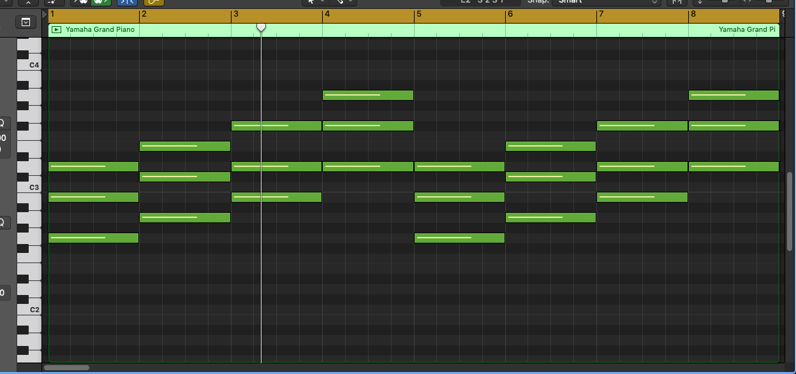

3. Making a song
1. Set BPM
1) I'm gonna set bpm as 150
2. Select your favorite instrument.
1) I'm gonna use this piano
3. Make a region in you track.
1) Make 16 beats length
4. Make a loop from 1 to 8
1) Drag this yellow part
2) (shortcut key = 'C'), you can turn it on or off.
2) (shortcut key = 'C'), you can turn it on or off.

5. Edit
1) Double click this green region or press 'E' key
2) Now you can make a melody on this pad
2) Now you can make a melody on this pad
6. Let's draw notes
1) Press 'T' key and select 'P' key
2) Pencil tool = you can draw notes
2) Pencil tool = you can draw notes
7. D Major key
1) I'm gonna use D Major key in this song.
2) I will use this chord progression (IV - V - VI - I)
3) G - A - Bm - D
4) If you want to duplicate the track(not region), use ('cmd' + 'D')
4) If you want to duplicate the region(not track), use ('cmd' + 'R')
2) I will use this chord progression (IV - V - VI - I)
3) G - A - Bm - D
4) If you want to duplicate the track(not region), use ('cmd' + 'D')
4) If you want to duplicate the region(not track), use ('cmd' + 'R')

8. Add different instruments
1) Add instruments you want.
2) I will use Bass, more piano...
3) Control volume of the track, depends on your taste
4) If you want to duplicate region, click 'cmd' key and drag the region
2) I will use Bass, more piano...
3) Control volume of the track, depends on your taste
4) If you want to duplicate region, click 'cmd' key and drag the region
9. Make a Melody on top
1) Select your favorite instrument to make main melody.
10. Align regions
1) Use variety instruments
2) It's better to study (intro, verse, chorus, drop, outro...)
2) It's better to study (intro, verse, chorus, drop, outro...)
Now to some extent you can make a song.
Try making songs as much as you can
I think Copying songs of other artists is the best way to practice
Try making songs as much as you can
I think Copying songs of other artists is the best way to practice